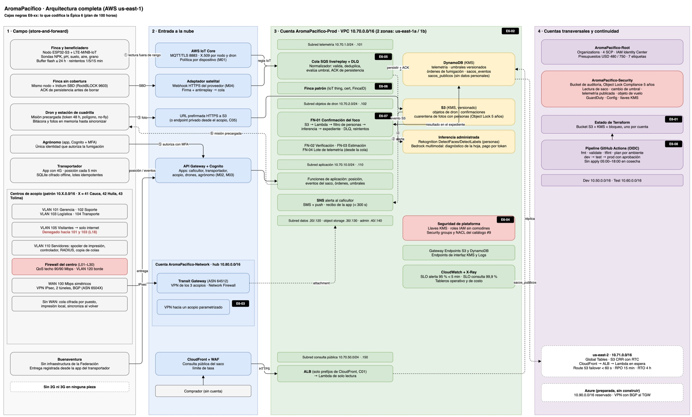
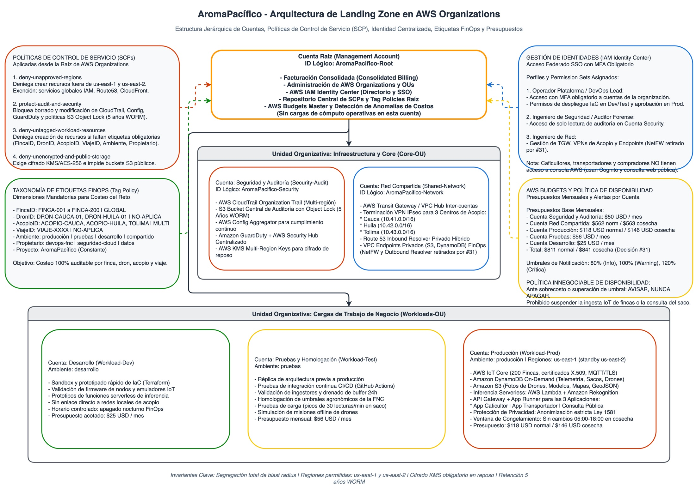
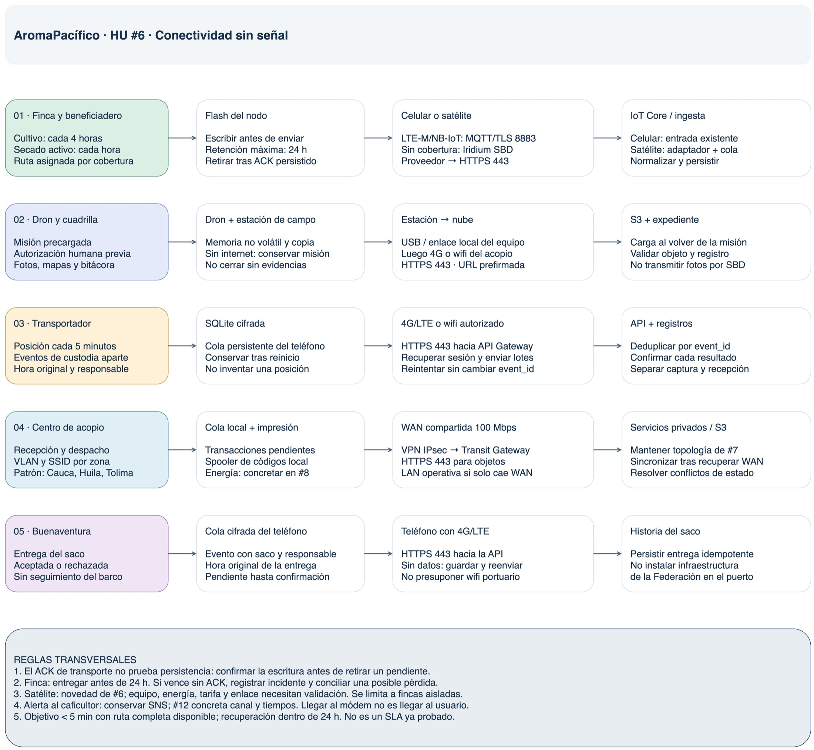
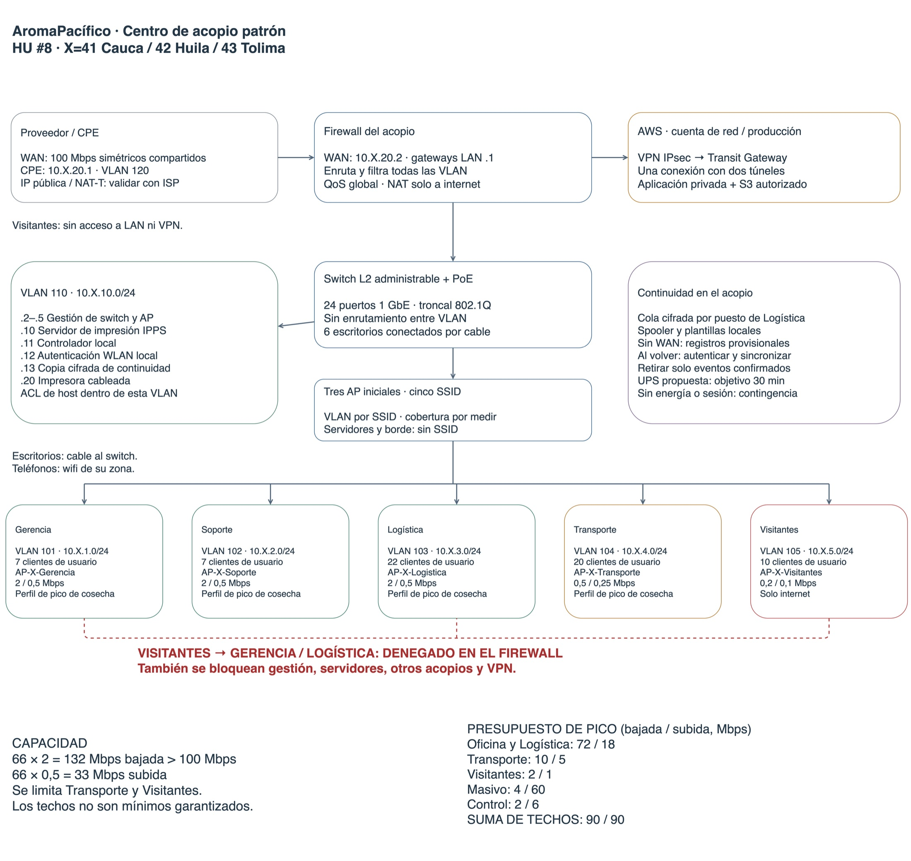
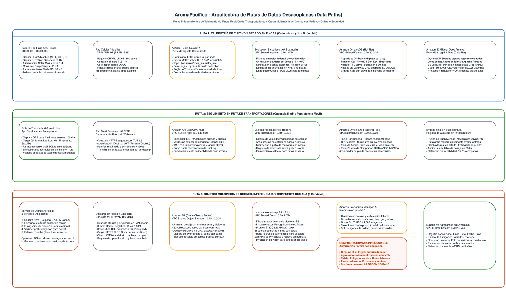
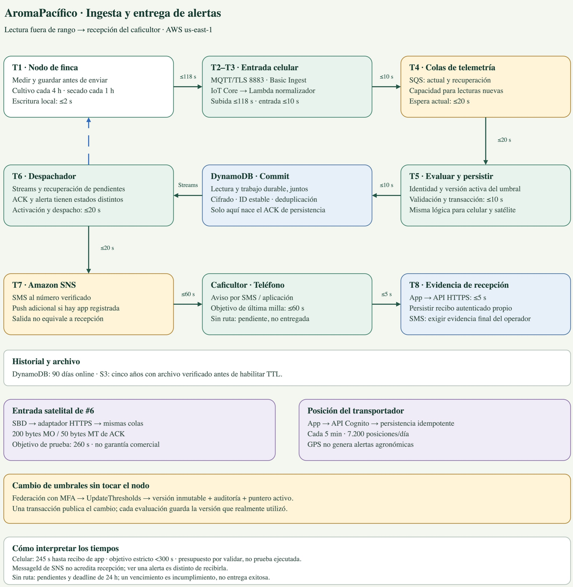
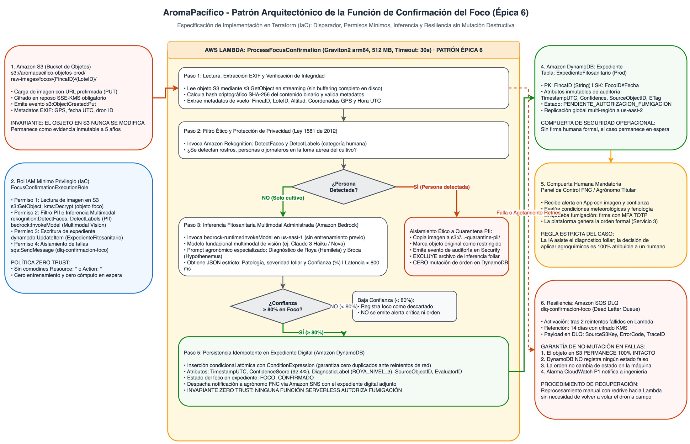
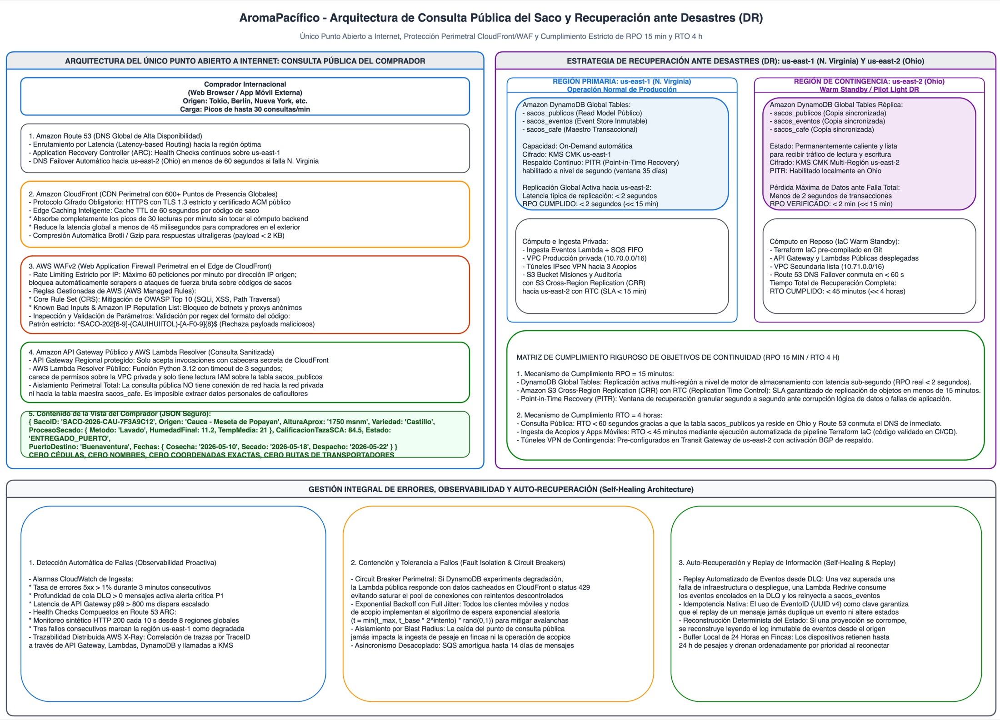
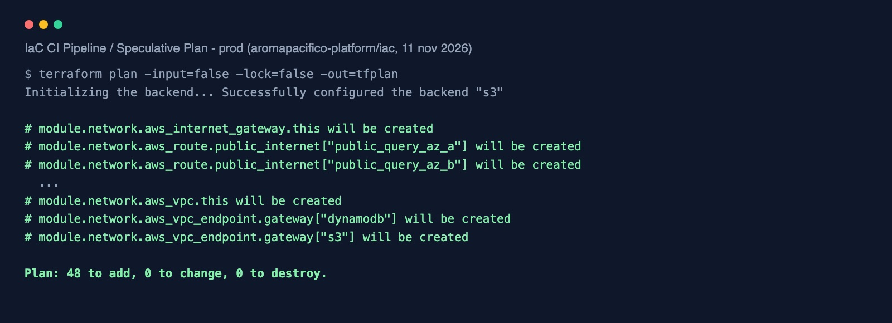
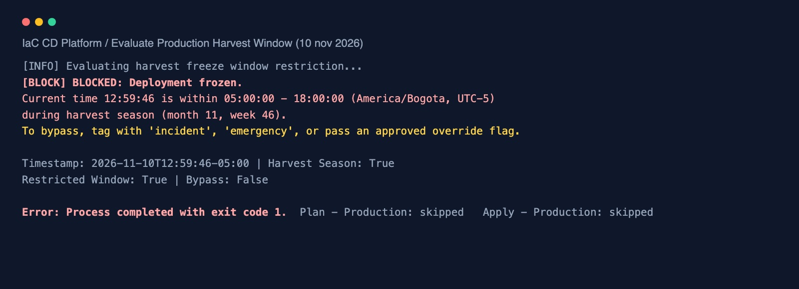

El recorrido de un saco de café
El sistema sigue el café en cinco puntos. En varios de ellos no hay señal, y de eso salen casi todas las decisiones de diseño.
Finca
El caficultor cultiva, seca y empaca. Sensores de suelo, aire y grano toman lecturas cada 4 horas y cada hora en secado.
Sin señal en el loteTransportador
60 conductores llevan los sacos por vías terciarias. La app registra la posición cada 5 minutos.
Señal solo en la vía principalCentro de acopio
Cauca, Huila y Tolima reciben, aceptan o rechazan e imprimen el código del saco.
WAN de 100 MbpsBuenaventura
Se registra la entrega desde la app. La Federación no tiene equipos en el puerto.
Teléfono con 4GComprador
Consulta el saco por su código desde el exterior, sin ver datos personales.
InternetEl territorio hasta Buenaventura, el monitoreo con alerta al caficultor, el saco de 60 kg con su consulta por código, los cinco servicios de dron, las tres aplicaciones y la retención de 5 años, ahora cifrada e inmutable.
El supuesto de señal 2G o 3G en la finca, el envío directo de lecturas sin buffer local y la infraestructura propia en el puerto. Ver la matriz 2020.
Decisiones base
AWS en us-east-1
IoT Core da a cada nodo y a cada dron su propio certificado X.509 y permite revocarlo de forma puntual.
us-east-2 solo para la consulta
El RTO de 4 horas lo exige la consulta del saco. La ingesta se levanta con Terraform si hace falta.
Azure preparada, sin construir
Rango 10.90.0.0/16 reservado, conexión con BGP y DNS definidos. Segunda nube.
Terraform y GitHub Actions
Toda la infraestructura como código; el pipeline entra a AWS por OIDC, sin llaves guardadas.
Patrón que se codifica
La ingesta de telemetría con una finca patrón y la función que confirma el foco de plaga con la foto del dron.
Seis cuentas
Raíz, seguridad, red, desarrollo, pruebas y producción en AWS Organizations, con cuatro SCP desde la raíz.
La arquitectura completa en una vista
Se lee de izquierda a derecha: el campo, las puertas de entrada a la nube, la plataforma de producción y las cuentas transversales. Las cajas negras E6-01 a E6-08 son las que se programan en las 100 horas.


Cuatro SCP desde la raíz: solo us-east-1 y us-east-2, nadie apaga la auditoría, ningún recurso sin sus siete etiquetas (FincaID, DronID, AcopioID, ViajeID, Ambiente, Propietario y Proyecto) y nada sin cifrar ni público.
Lectura de un saco, cambio de un umbral, telemetría publicada y objeto de vuelo entregado quedan en la cuenta de seguridad con Object Lock en modo Compliance por 5 años. Ni la cuenta raíz puede borrarlos. Auditoría.
Cognito con MFA para las apps, IAM Identity Center con llave física para la plataforma y certificado X.509 por dispositivo. KMS por dominio, TLS en todo tránsito y datos personales bajo la Ley 1581 de 2012. Identidades y datos del saco.
USD 811 en un mes normal y USD 841 en cosecha, repartido por cuenta. Los presupuestos avisan sin apagar la ingesta ni la consulta.
Cinco puntos, y ninguno depende de tener señal
Cada punto tiene red de salida, almacenamiento local y un comportamiento definido sin señal. Ninguna pieza usa 2G ni 3G.
| Punto | Con señal | Sin señal |
|---|---|---|
| Finca | LTE-M o NB-IoT, MQTT con TLS a IoT Core | Buffer de 24 horas; solo borra lo que la nube confirmó |
| Dron | Misión por HTTPS antes de salir | Vuela la misión ya autorizada; sin bitácora no hay cierre |
| Transportador | App con 4G hacia la API con Cognito | Posición cada 5 minutos en SQLite cifrado; sube en lotes |
| Acopio | LAN segmentada y VPN con dos túneles | LAN, impresión y cola local siguen funcionando |
| Buenaventura | Registro de la entrega desde la app | Cola cifrada en el teléfono |

La finca sin cobertura
Un gateway LTE compartido por unas cinco fincas, en la vía o la cabecera, que entra por AWS IoT Core para LoRaWAN.
Iridium SBD donde el gateway no alcanza, con mensajes cortos y ACK de persistencia.
Cuota de conectividad por finca con el gateway compartido, frente a USD 147 con satélite en cada finca.
Supuesto: el 80 % de las 60 fincas sin cobertura alcanza un gateway. Se valida en la preinspección de cada vereda (planning #31 y #71).


Siete VLAN y cinco SSID; visitantes solo salen a internet. 66 clientes a 2 Mbps piden 132 Mbps sobre un enlace de 100, por eso hay un techo de 90 Mbps y límites en cosecha. Las reglas del firewall están en red-firewall.md (planning #9).
Equipo de una finca con cobertura: USD 893 puesto en la finca, más USD 0,30 al mes de conectividad. Sin cobertura: USD 1.434. VPN de los tres acopios: USD 109,50 al mes.
De la lectura a la alerta, y de la plaga a la fumigación
Presupuesto de la alerta de cultivo, en segundos

La alerta cuenta como entregada solo cuando el teléfono confirma la recepción.
En cosecha, entre cultivo, secado y posición. DynamoDB On-Demand basta para ese volumen.
Viven en la plataforma, versionados, y cada cambio queda atribuido a una persona.
Drones: modo combinado
| Servicio | Modo | Al año |
|---|---|---|
| Delimitar el lote | Área | 200 |
| Confirmar la alerta | Precisión | 280 |
| Fumigar | Precisión | 210 |
| Verificar la fumigación | Precisión | 210 |
| Estimar la cosecha | Área | 400 |
| Total | 167 en el mes pico | 1.300 |
El modo de área solo fumigaría toda la finca con químicos de más. El de precisión solo no alcanza para estimar la cosecha por departamento. Combinados, se mapea dos veces al año y se fumiga solo el foco, de 0,2 a 0,5 hectáreas.
Vuela un prestador por acopio bajo el RAC 100. La fumigación la autoriza solo el agrónomo, con MFA. Servicio de drones y orden de fumigación.

RPO de 15 minutos con DynamoDB Global Tables, PITR y réplica de S3. RTO de 4 horas: la consulta cambia de región en menos de un minuto. El comprador ve origen, fechas, estado y secado, nunca cédula, nombre ni ruta. Saco y viaje.
Dos SLO: 95 % de las alertas con señal en menos de 5 minutos y 99,9 % de disponibilidad de la consulta. Alarmas para finca sin telemetría, alerta no entregada, vuelo sin registro, fumigación sin cierre y enlace caído. Observabilidad.

Ingesta completa: menos de USD 5 al mes. Inferencia: USD 3,11 por cada 1.000 fotos. Drones contratados: USD 67.082 al año. Auditoría de 5 años: unos USD 53 al año.
El código cabe en 100 horas y dos semanas
Solo cuenta trabajo que termina en código: cinco módulos de Terraform, un pipeline con OIDC y un plan limpio por ambiente. Cada pieza corresponde a una caja E6 del diagrama.


network, security, ingest, farm y function, cada uno con su ejemplo de uso y sus pruebas.
Formato, validación, TFLint, Trivy y un plan por ambiente con OIDC. Un plan fallido detiene el pipeline. Producción exige revisor. pipeline.md.
Dos plantillas de release notes con seis campos: qué cambia, ventana, impacto, aprobación, aviso a la Federación y vuelta atrás. Infraestructura y aplicación.
Tres decisiones bajan el costo anual de USD 388 mil a USD 99 mil
Precios actuales con TRM de COP 3.237,83. Hardware, plataforma y drones salen de las cifras del caso; cada supuesto está en el registro del proyecto.
Hardware de una finca con cobertura, puesto en la finca.
Plataforma en un mes normal, con pruebas y desarrollo.
Plataforma en un mes de cosecha. Las funciones cuestan USD 0,66.
Campaña de drones contratada, al año.
Contratar los drones
Menos al año que tener cuadrillas propias, más USD 105.486 de equipo que no se compra.
LoRa en vez de satélite
Menos al año. La cuota del caficultor sin cobertura pasa de USD 147 a USD 0,20 al mes.
Bajar la red fija
Menos al año, sin Network Firewall ni Resolver de salida en el piloto.
Documentos: hardware, mes normal y cosecha, drones y decisiones de ahorro.
Una identidad propia para leer al sol y sin manual
Colores del cafetal, la cereza, el Pacífico y la tierra volcánica, con contraste AAA. Cada estado del saco lleva color, icono y texto.
Tipografía del sistema con Roboto en su pila y Fira Code para datos. Logo y paleta y tipografía y grilla.
Del 29 de octubre al cierre del 21 de noviembre de 2026
Ocho fases en cuatro sprints. El avance se pondera por las horas estimadas de cada historia: 85 % del proyecto y 94 % de la Épica 6.
Un senior que decide y dos juniors que diseñan y construyen
Juan Manuel Díaz Moreno
Decisiones base, plan de 100 horas, base del repositorio de IaC, arquitectura consolidada, costos y revisión de cada entrega.
Juan David Pacheco Vargas
Landing zone, identidades, cifrado, drones, funciones e inferencia. En código: seguridad, función y pipeline. Release notes y marca.
Juan David Ocampo
Conectividad sin señal, centro de acopio, firewall, nodo de finca e ingesta. En código: red, ingesta y finca patrón.
Todo el trabajo es público y revisado
Repositorios
- planning: arquitectura, costos, cambio y diseño
- iac: Terraform de la Épica 6
- .github: workflows reutilizables del pipeline
- Tablero Kanban del proyecto